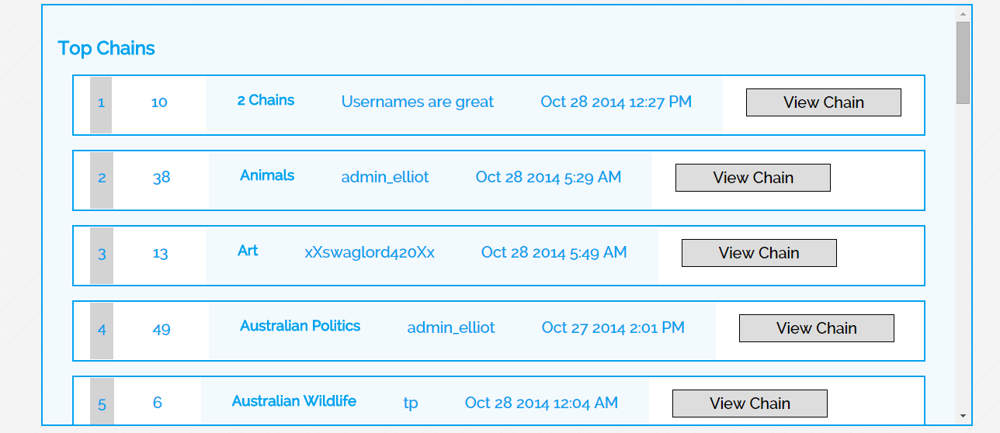
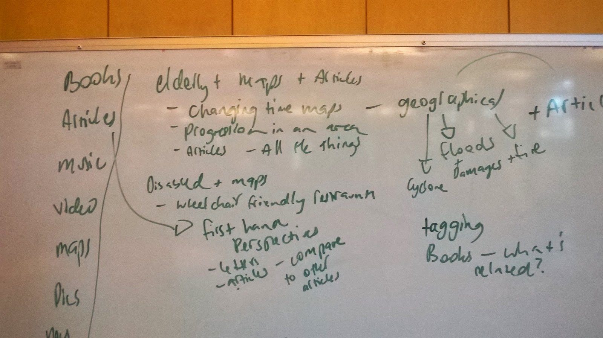
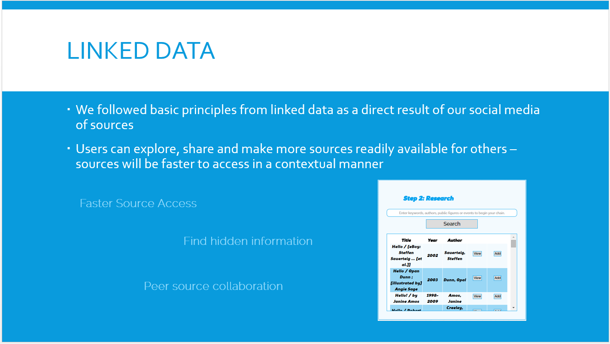
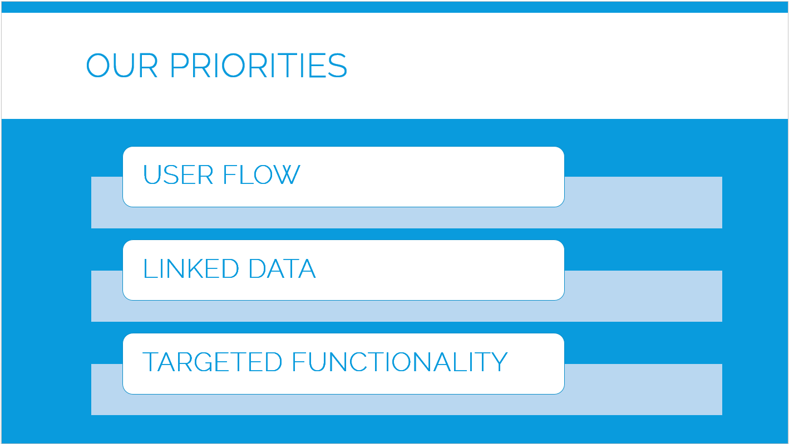
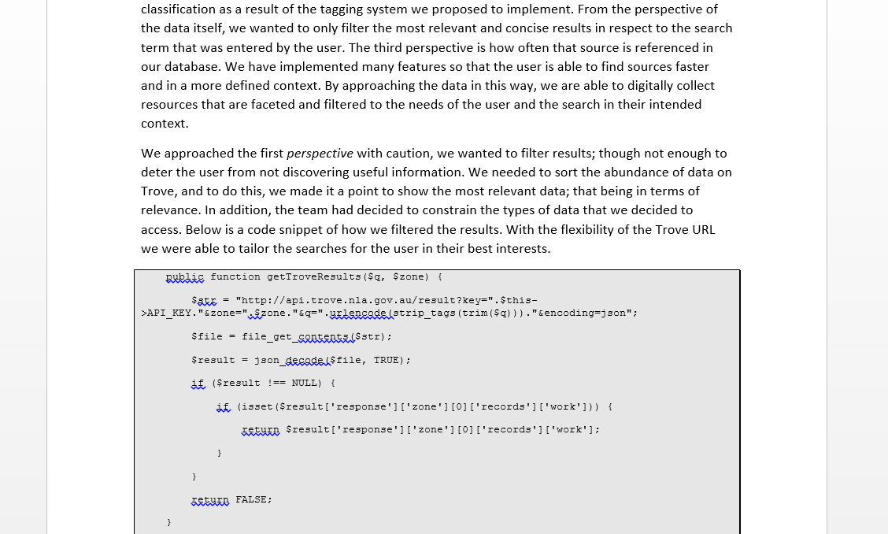
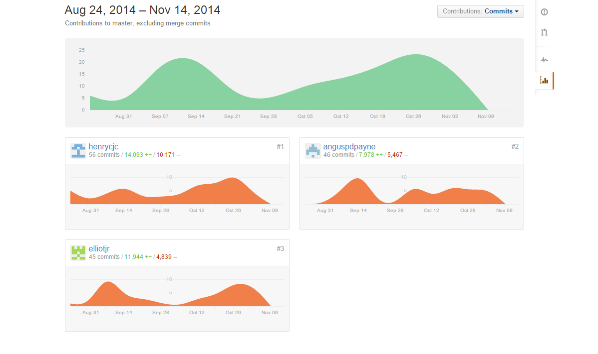

Implement
Tradeshow
Report
Reflect
After completing Part B, it came down to making sure the overall style of the site was consistant and easy to use, as well as implementing some last minute functionality. After recieving feedback from user testing, I dove into fixing up some graphical and orientational errors in the application.
User testing was also a major step in part C. Because we were coming to the end of implementation, we wanted to make sure that the target demographic was able to work productively with the application. The first stage of testing we did in part C was the digital testing in the contact. It was up to me to elicit feedback from users and produce creative solutions to them in order to increase the useability of the site. I asked many users to work through the site and give me feedback; with most of them mentioning that the orientationo of the 'Your Chains' page being quite confusing.
 The preperation for the tradeshow was left up to me, and with that, I lept straight into creating materials and resources to help deliberate our concept to a wider audience. After being inspired from a recent TED talk, I didn't want to just tell an audience what our application does or how it does it, rather, I wanted to tell them our motivation behind it and our purpose for creating it. Materials that I created thinking appropriate were business cards, a poster, a slideshow and of course, dressing well. Below is an extract.
With technology and big data expanding exponentially in this day and age, and with younger generations being exposed to rapid developments in technology at school, we thought it suitable to create a product that facilitated how students explore and access the overabundance of datasets on the web. History Chains is our attempt to extend the concept of linked data in the context of a social medium. With the object of centrality being the timeline itself, students can develop a study or resource 'chain' that they can share to other users. Our purpose and resolution is to expand search further than a simple portal and allow a user to explore Trove's. That being, finding hidden information faster and in a certain context. By following the principles of linked data and the semantic web, we embarked on a mission to make information on Trove more readily available for the younger generations.
 This section of the assignment was one that I found the most rewarding, either through the development of the report or the conclusion of the project, I was able to finally realise the skills that I had learnt and the amount of work that I, and the team had completed. The Tradeshow was also a rewarding experience for me in this section. I found that after writing the pitch, that our application had much potential and was of a high standard. Though, the presentation and advertising of the application could have gone a little smoother. I made it a point to emphasise our target audience and useability through the tradeshow and I believe that the individuals interested in our product seemed attracted to that point.
Part C for our group, and especially myself went very well. The report and tradeshow was organised early and that left us the rest of the time to finish refining the product, and as a result, I beleive that our application is the best it could. The only criticism I have is that I should have user tested a little more to make sure that I and the group had implemented and included core functionality that would cater for the target audience.
Below you can also see my contribution to the groups github all throughout the semester
 Looking back through my implementation in Part B, I thought that I could have spent a little more time on the filtering of the datasets. For me, exploring with JSON and understanding how the data was stored and could be accessed was a breakthrough. At the end of the project, I now look back and wish that I had spent some more time exploring the possibilities of JSON and data set manipulations, though it is something that I look foward to experimenting with in the near future. But what have I learnt and what did I get out of Part B? From Part B I learnt a whole lot more about web design, database design, JSON and simple CRUD databases.
I also found that creating user flow was harder than expected. It was not until after using testing that I was able to go back to the origional design and make some changes. This and even the core functionality of the website was something that I had mis-interpreted, and as a result, I was designing for myself and not the user. I find that in design this is quite a common thing to happen. If it was not for user testing and getting our product out there, that we may not have created user flow, and instead, created an application that did not suit the needs of the target audience. Though we all learn from our mistakes, and in spite of this, I have now learned the importance of meeting a clients objectives and targeting an audience.